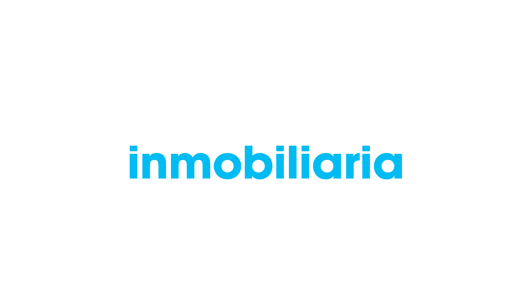

El asset del logo
Medido sobre logo-source.png (3543×1993, RGBA). El arte real ocupa el rectángulo
x 898–2797, y 645–1455 → 1900×811 px. Todo lo demás es alfa 0.
1. Cuánto padding hay
| Zona | px | % del canvas |
|---|---|---|
| Padding izquierdo | 898 | 25,4 % |
| Padding derecho | 745 | 21,0 % |
| Padding superior | 645 | 32,4 % |
| Padding inferior | 537 | 26,9 % |
| Arte visible | 1900×811 | 53,6 % × 40,7 % → 21,8 % del área |
2. Qué se gana al recortar (misma caja de 60px)
Las tres imágenes se renderizan con max-height: 60px, exactamente como hoy.
El recuadro punteado es la caja de 60px.

| Archivo | Proporción | Arte a 60px de caja | Peso PNG |
|---|---|---|---|
logo-source.png (actual) | 1,778:1 | 24,4 px de arte | 39 KB |
logo-full.png (recortado) | 2,343:1 | 60 px de arte — +146 % | 10 KB |
logo-compact.png (sin bajada) | 3,140:1 | 60 px de palabra-marca | 7,5 KB |
3. Bandas del lockup
| Banda | Color | % del alto del arte | Posición vertical |
|---|---|---|---|
| «dzts™» | #ffffff | 39,9 % | 0 – 39,9 % |
| «inmobiliaria» | #00bcf2 (= --bs-primary) | 29,0 % | 45,6 – 74,6 % |
| «by César Torres» | #ffffff | 15,8 % | 84,2 – 100 % |
De ahí sale la constante clave: la palabra-marca sin bajada es el 74,6 % superior del arte. Un recorte compacto de alto H muestra las palabras al mismo tamaño que un lockup completo de alto H / 0,746.
4. Dónde deja de leerse la bajada
Cada fila es el lockup completo al alto de arte indicado.
La bajada es tipografía fina en blanco sobre #3d3d3d. Bajo ~11px de banda (≈70px de arte)
el trazo cae por debajo de 1 px y el antialiasing la vuelve una textura gris. No usar la bajada por debajo
de 70px de arte; a partir de ahí conviene el recorte compacto.
5. Qué pedirle al cliente
| Prioridad | Entregable | Formato |
|---|---|---|
| 1 | Lockup completo, recortado al arte, sin margen | SVG con textos convertidos a curvas |
| 2 | Lockup compacto (sin «by César Torres»), recortado | SVG con textos convertidos a curvas |
| 3 | Variante en tinta oscura para fondos claros (ficha impresa, PDF) | SVG |
| — | Si no hay vectorial: los mismos dos recortes en PNG-24 con alfa | PNG ~1900×811 y ~1900×605 |
El PNG recortado a 1900×811 pesa 10 KB, un cuarto del original con padding. Igual conviene SVG:
la marca es geometría plana de dos colores, va a pesar ~4 KB y se ve nítida a cualquier alto.
Ojo: Sanity no transforma SVG — urlFor(logo).width(300) devuelve el archivo original tal cual.
Para un logo eso está bien, pero implica que no hay lqip ni srcset real.
6. Si el cliente no puede reexportar
Hay dos caminos, en este orden:
- Herramienta de recorte del Studio. El campo
logoya tieneoptions: { hotspot: true }, así que el editor puede recortar sin tocar el archivo. Hoy no funcionaría:SITE_SETTINGS_QUERYproyectalogo { asset->{…}, alt }y no traecropnihotspot, así queurlFor()no tiene qué aplicar. Hay que agregar esos dos campos a la proyección. urlFor(logo).rect(...)con fracciones. Las proporciones del lockup son estables; las del padding no. Sirve como parche temporal calculando el rect desdeasset.metadata.dimensions, pero se rompe en silencio si el cliente sube otro archivo.
Lo que no conviene: compensar el padding desde CSS con transform: scale(),
márgenes negativos o clip-path. Deja hardcodeados en la hoja de estilos los porcentajes de este
archivo, se rompe sin aviso al reemplazar el logo, y sigue descargando píxeles transparentes.
7. El asset del hero (homePage.heroLogo)
Es un asset distinto: sólo «dzts» con degradé cian, sin «inmobiliaria» ni bajada. No lo tenemos acá;
en los prototipos se aproxima recortando el «dzts» del PNG del cliente (logo-mark.png, 880×324, 2,716:1)
y usándolo como mask-image sobre un degradé cian.
| Problema | Detalle |
|---|---|
| Tope de 400 px | apps/frontend/src/app/(site)/page.tsx:160 pide
urlFor(heroLogo).width(400). Si la marca pasa a 600–780 px de ancho CSS,
en pantallas 2× se ve borrosa. Hay que subir ese ancho (≈1600) o pasar a
sizes + el loader de Sanity, que ya arma srcset. |
Caja fija + fill |
.logo-container es 12,5rem×6,25rem / 25rem×12,5rem con object-fit: contain.
La caja tiene proporción 2:1 y la marca 2,716:1, así que sobra alto: la marca nunca llena la caja.
Con un asset recortado conviene una imagen con ancho intrinseco y
aspect-ratio, sin fill. |
| Padding desconocido | Si el asset del hero tiene el mismo margen transparente que el del header, se repite el problema: hay que pedirlo recortado igual. |
| LCP | La foto de fondo se queda con priority (regla del proyecto: una sola por página).
La marca del hero, al crecer, es candidata a LCP: darle loading="eager" y
sizes explícito, sin priority ni fetchPriority. |
¿Mismo lockup en header y hero? No. Conviene mantener las dos piezas
distintas: el header lleva el lockup (marca + rubro, identifica el sitio en todas las páginas) y el hero lleva
sólo «dzts» a gran tamaño (gesto gráfico, no informativo — el h1 de abajo ya dice qué es).
Repetir el lockup completo en los dos lugares, a 80px y a 250px, con 100px de separación, es lo que
haría ver la home cargada.
Qué pedir para el hero: el mismo «dzts» con degradé, en SVG con el degradé
como linearGradient y los textos en curvas, recortado al arte. Si no hay vectorial: PNG-24 con alfa
de ~1600 px de ancho (2× del render máximo de 780 px).
logo-source.png es el archivo entregado por el cliente.
logo-full.png y logo-compact.png se generaron recortando al bounding box del canal alfa
y reduciendo a la mitad (950 px de ancho); logo-mark.png es el recorte del «dzts».
Los tres son sólo para estos prototipos.